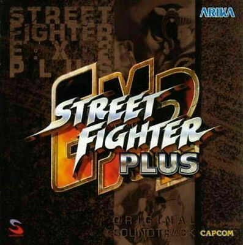
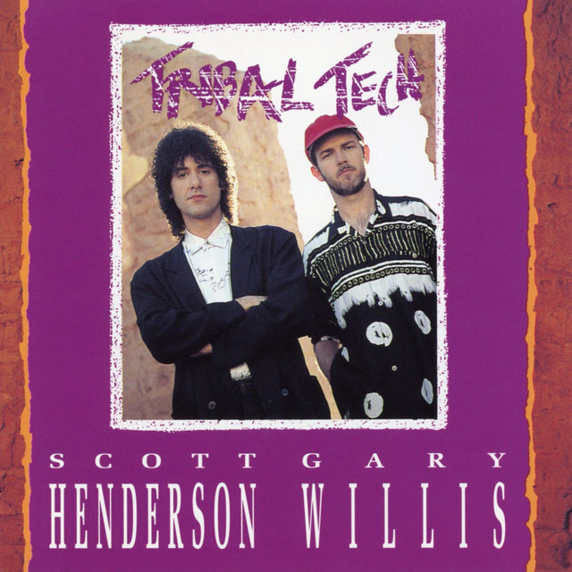
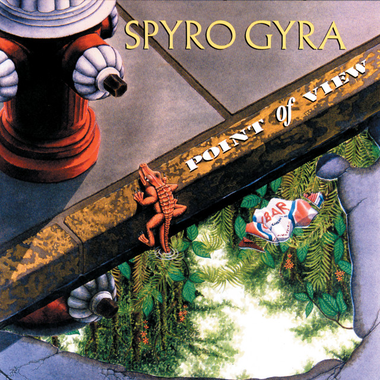
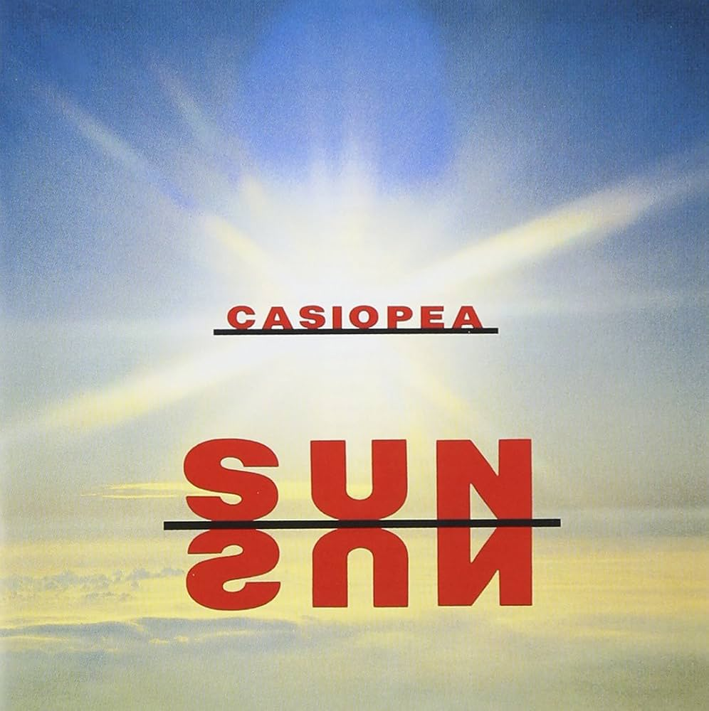
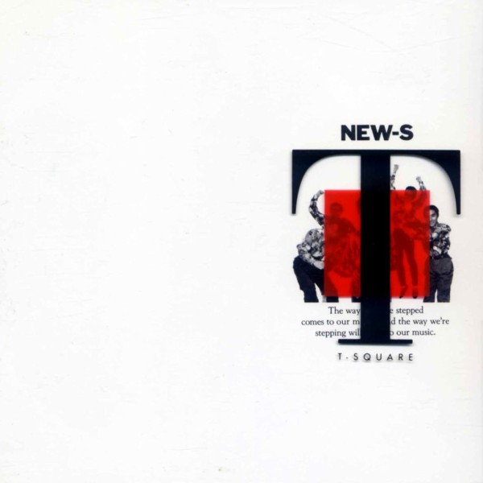
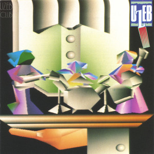
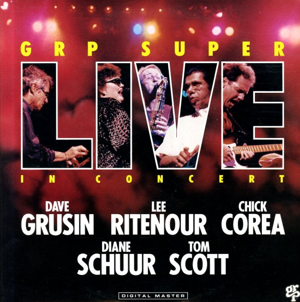

My Workout Playlist
Currently Playing:

Frozen Mist -
Ayako Saso
Street Fighter EX2 Plus Original Soundtrack (3:46)

Signal Path - Tribal Tech
Tribal Tech (6:31)

No Limits -
Spyro Gyra - Point Of View (4:42)

Transformation 1
- CASIOPEA - SUN SUN (3:24)

Little League Star
- T-SQUARE - NEW-S (5:40)

Loose - UZEB
- Uzeb Club (7:19)
Album Of The Week
GRP Super Live In Concert
Really good 2-hour experience, especially for getting
creative.

DISC 1 (DAVE GRUSIN, LEE RITENOUR, DIANE SCHUUR & TOM SCOTT)
Deedles' Blues - Diane Schuur (4:09)
Love Dance - Diane Schuur (6:38)
Caught A Touch Of Your Love - Diane Schuur (3:05)
Early A.M. Attitude - Dave Grusin (5:42)
The Sauce - Lee Ritenour (4:39)
Water From The Moon / Earth Run - Lee Ritenour
(6:38)
Target - Tom Scott (5:26)
Goodbye For Kathy - Dave Grusin (5:07)
An Actor's Life - Dave Grusin (8:17)
DISC 2 (THE CHICK COREA ELEKTRIC BAND)
Overture (4:09)
Time Track (13:12)
No Zone (17:09)
Sidewalk (6:49)
City Gate / Rumble (6:13)
Full Moon (3:14)
Light Years (4:42)
Encore (13:06)